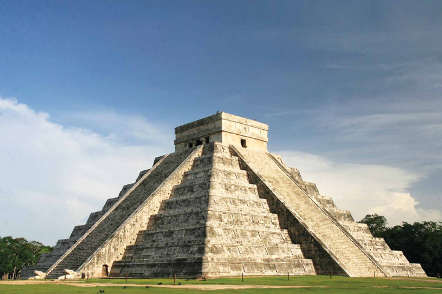

Chichen Itza
|  |
La Gran Muralla China es una antigua fortificación construida y reconstruida entre el siglo V a.C. y el siglo XVI para proteger las fronteras norteñas del Imperio Chino de las invasiones de los nómadas xiongnu de Mongolia y Manchuria. Extendida aproximadamente 21,196 kilómetros de este a oeste de China, es una de las estructuras más impresionantes y famosas creadas por el ser humano, visible incluso desde el espacio según algunas afirmaciones. La muralla no es una estructura continua, sino una red de muros y torres de vigilancia construidos en diferentes dinastías a lo largo de la historia. La parte más famosa y mejor conservada de la muralla se encuentra cerca de Beijing. Hoy en día, la Gran Muralla es un símbolo icónico de China y una de las atracciones turísticas más visitadas del mundo, además de ser reconocida como Patrimonio de la Humanidad por la UNESCO. |
| Pais |
Mexico |
| Estado |
Yucatan |
| Fundacion |
250 d.C. |
| Inscripcion |
1988 |
| Region |
America Latina y Caribe |
| Descubrimiento |
1840 |